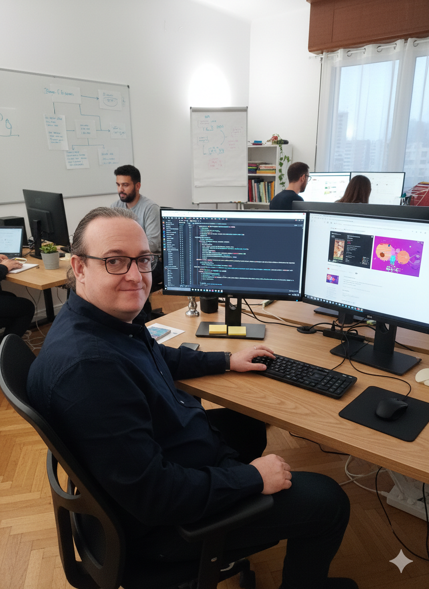
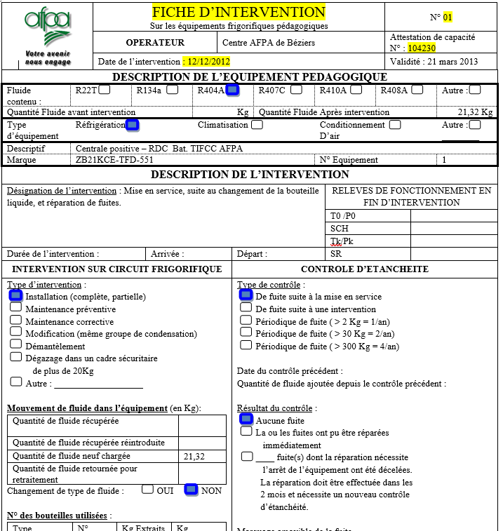
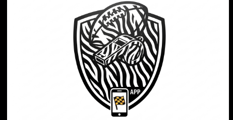

Web Development
Création complète Web
Déploiement d'une présence digitale pour une société en énergies renouvelables.
Ancien officier marinier dans l'Aéronautique Navale, je combine rigueur militaire et expertise technique en aéronautique, en SAV, en électronique et en énergies renouvelables, pour piloter vos projets Data et IA.


Ancien Officier Marinier et Responsable Technique, je transitionne aujourd'hui vers le métier de Data Scientist pour mettre ma rigueur au service de l'analyse stratégique.
En Mastère Data & IA, je travaille avec Python, SQL et le No-Code (Odoo, Synchroteam) pour structurer et exploiter les données complexes.
Plus de 10 ans à diriger des unités de production et des équipes techniques (jusqu'à 9 techniciens), garantissant performance et respect des budgets.
Expert en diagnostic technique et gestion de crise, une compétence forgée dans la Marine Nationale et des sociétés spécialisées en énergie.
Plus de 10 ans d'expérience entre rigueur militaire et expertise technique.
Cesi de Labège
Spécialisation en gestion de données massives et intelligence artificielle.
Secteur Privé
Gestion d'équipe, planification et optimisation de la satisfaction client.
Marine Nationale
Leadership opérationnel et gestion de systèmes complexes en aéronef (ATL2, Falcon50) en haute mer.
Un apprentissage continu pour rester à la pointe de l'innovation technique.
ESDIC
Spécialisation en ingénierie informatique appliquée aux données massives et à l'intelligence artificielle.
Studi
Management des technologies de l'information et stratégie digitale.
LINKUP COACHING
Certification Niveau 1-NSF 315 en gestion du personnel et de l'emploi.
AFPA de Béziers
Expertise technique en systèmes de climatisation et froid industriel.
Ecole du personnel volant de la Marine Nationale
Formation de navigant et spécialisation en électronique embarquée.
Parcours complet : Gérer et sécuriser ses accès, reconnaître le phishing.
Formation vidéo : Utilisation collaborative sur Mobile.
Certifications BAT et ELEC pour les installations photovoltaïques.
Titre de Reconnaissance de la Nation
Médaille de la Défense Nationale (Argent)
Médaille Outre-Mer TCHAD & Commémorative Afghanistan
The Common Security and Defense Policy Service Medal
Une double compétence rare : la maîtrise de la donnée alliée à une solide expérience du terrain.
Focus : Transformation de données brutes en indicateurs de performance (KPI).
Focus : Capacité à évoluer dans un environnement technique anglophone.
Focus : Automatisation de processus et création d'outils de gestion sur mesure.
Focus : Maintenance préventive et gestion des interventions terrain complexes.
Focus : Management en environnement exigeant (Marine Nationale).
Des solutions concrètes alliant logique de programmation et efficacité métier.
Déploiement d'une présence digitale pour une société en énergies renouvelables.

Architecture d'une base de données clients avec calcul de marge et gestion de planning.

Centralisation des ressources techniques pour les interventions terrain (2013).

Conception de fiches d'intervention et de suivi pour la formation froid.

Déploiement d'un outil d'aide aux arbitres de football américain en France.
Besoin d'un expert pour piloter vos projets Data ou encadrer vos équipes ? Parlons-en.